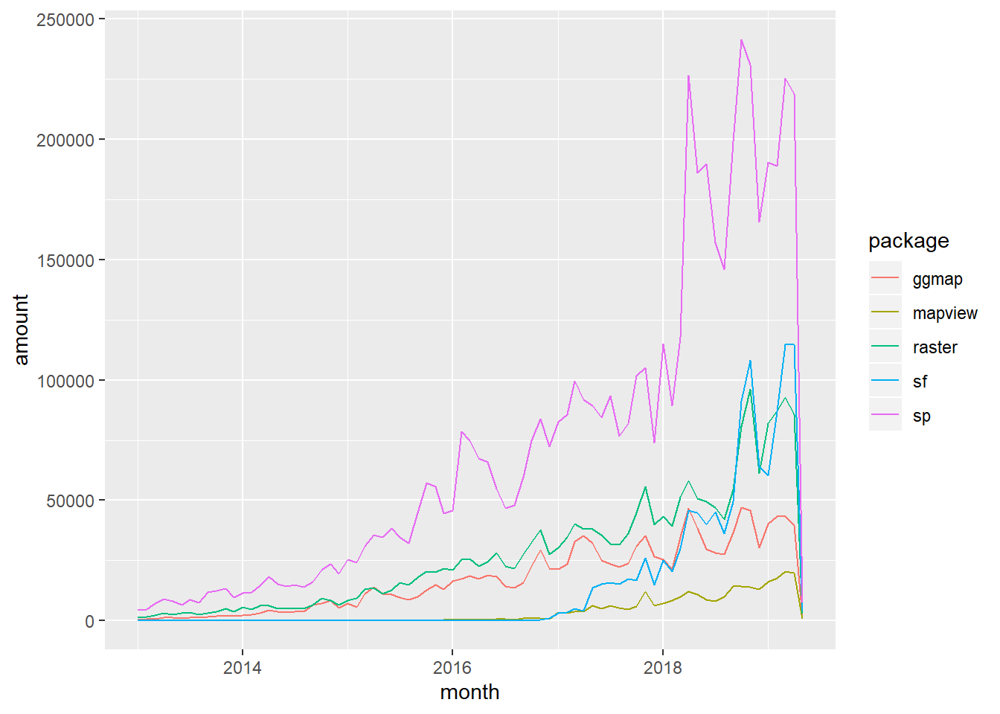
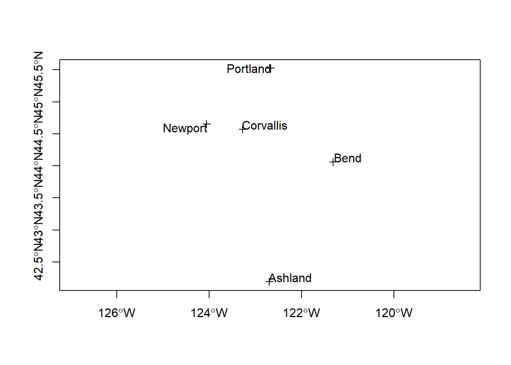

Spatial Objects
Lesson Goals
- Understand R representation of vector and raster spatial data
- Familiarity with R packages for reading, writing, and dealing with vector and raster data
- Understand spatial file types supported by R spatial packages
- Learn to pull spatial data from online sources into R
Spatial Data
We can represent spatial data as discrete locations (points, lines or polygons) or as continuous phenomena without natural boundaries. We typically represent the former type of data (discrete locations) as vector data, with an associated geometry or shape, and some attributes with information about the locations. Examples are:
- state boundaries with state name and population
- rivers with their flow volume and names
- polygons of watersheds with their names and associated landscape information
We represent the latter type of data (continuous spatial fields) with rasters - these would be things such as elevation, precipitation, and atmospheric deposition for instance.
Basic data structures in R can represent spatial data - all we need is some vectors with location and attribute information - below we generate cites with population and make a map with a legend:
cities <- c('Ashland','Corvallis','Bend','Portland','Newport')
longitude <- c(-122.699, -123.275, -121.313, -122.670, -124.054)
latitude <- c(42.189, 44.57, 44.061, 45.523, 44.652)
population <- c(20062,50297,61362,537557,9603)
locs <- cbind(longitude, latitude)
plot(locs, cex=sqrt(population*.0002), pch=20, col='red',
main='Population', xlim = c(-124,-120.5), ylim = c(42, 46))
text(locs, cities, pos=4)
# Add a legend
breaks <- c(20000, 50000, 60000, 100000)
options(scipen=3)
legend("topright", legend=breaks, pch=20, pt.cex=1+breaks/20000,
col='red', bg='gray')
We can add a random polygon and map this as well:
cities <- c('Ashland','Corvallis','Bend','Portland','Newport')
longitude <- c(-122.699, -123.275, -121.313, -122.670, -124.054)
latitude <- c(42.189, 44.57, 44.061, 45.523, 44.652)
population <- c(20062,50297,61362,537557,9603)
locs <- cbind(longitude, latitude)
plot(locs, cex=sqrt(population*.0002), pch=20, col='red',
main='Population', xlim = c(-124,-120.5), ylim = c(42, 46))
text(locs, cities, pos=4)
# Add a legend
breaks <- c(20000, 50000, 60000, 100000)
options(scipen=3)
legend("topright", legend=breaks, pch=20, pt.cex=1+breaks/20000,
col='red', bg='gray')
# Add polygon
lon <- c(-123.5, -123.5, -122.5, -122.670, -123)
lat <- c(43, 45.5, 44, 43, 43)
x <- cbind(lon, lat)
polygon(x, border='blue')
lines(x, lwd=3, col='red')
points(x, cex=2, pch=20)
We can see in this toy example that numeric vectors can represent locations in R for simple mapping. Points just need to be a pair of numbers in cartesian space, and lines and polygons are just a number of these points (note that polygons are closed by having their first point coincide with last point which the polygon function in base R graphics takes care of).
You can do simple things with this spatial representation using basic R structures, but it breaks down quickly if you want to ask any spatial questions - for instance using the example above, how would we figure out the nearest city to Corvallis? Or imagine the polygon is a county and we wanted to know what cities are within the county?
So what information do we need to properly define spatial vector data and perform spatial operations?
- A coordinate reference system
- A bounding box or extent
- ?
Vector Data with sp
We’re going to quickly review how spatial data was standardized in recent years using the base package sp. It’s informative to understand the structure of sp objects, and a number of packages still depend on sp, but this is changing rapidly and the R spatial vector world is rapdily moving toward adaptation of the newer sf package, so the bulk of our vector work will be using sf.
One reason it’s worth still going over sp, even though you’ll soon find sf is far superior in a number of ways, is that numerous packages are currently built using the sp object structure, so there’s a need to learn it to navigate current R spatial ecosystem. The image below is from Colin Gillespie’s recent tweet showing major packages and dependies in R:

CRANdependencies
And below is a figure (with corresponding code you can run) that I put together based on a figure in Geocomputation with R - the take home is that sp is still the most-used spatial package in R despite the growth of sf.
# devtools::install_github("metacran/cranlogs")
library(cranlogs)
library(ggplot2)
library(lubridate)
library(dplyr)
stats <- cran_downloads(from = "2013-01-01", to = "2018-08-22",packages = c("sp", "sf", "raster", "ggmap", "mapview"))
monthly_stats <- stats %>%
group_by(month=floor_date(date, "month"), package) %>%
summarize(amount=sum(count))
ggplot(monthly_stats, aes(x=month, y=amount, group = package, colour = package)) + geom_line() 
Handling of spatial data in R was standardized in recent years through the base package sp, which uses ‘new-style’ S4 classes in R that use formal class definitions and are closer to object-oriented systems than standard S3 classes in R.
The best source to learn about sp and fundamentals of spatial analysis in R is Roger Bivand’s book Applied Spatial Data Analysis in R
sp objects inherit from the basic spatial class, which has two ‘slots’ in R new-style class lingo. From the Bivand book above, here’s what this looks like (Blue at top of each box is the class name, items in white are the slots, arrows show inheritance between classes):

SpatialClassesFig1
Let’s take a look at this in R - run the following R code in your R console (or from source):
library(sp)
getClass("Spatial")## Class "Spatial" [package "sp"]
##
## Slots:
##
## Name: bbox proj4string
## Class: matrix CRS
##
## Known Subclasses:
## Class "SpatialPoints", directly
## Class "SpatialMultiPoints", directly
## Class "SpatialGrid", directly
## Class "SpatialLines", directly
## Class "SpatialPolygons", directly
## Class "SpatialPointsDataFrame", by class "SpatialPoints", distance 2
## Class "SpatialPixels", by class "SpatialPoints", distance 2
## Class "SpatialMultiPointsDataFrame", by class "SpatialMultiPoints", distance 2
## Class "SpatialGridDataFrame", by class "SpatialGrid", distance 2
## Class "SpatialLinesDataFrame", by class "SpatialLines", distance 2
## Class "SpatialPixelsDataFrame", by class "SpatialPoints", distance 3
## Class "SpatialPolygonsDataFrame", by class "SpatialPolygons", distance 2We can see from this that a basic sp spatial object has to have two ‘slots’ - a bounding box and a ‘proj4string’ - this is the prefered format in R for a coordinate reference system (CRS) - either projected or unprojected. We can also see, from the figure above, that building off of the Spatial class, to have a SpatialPointsobject we also need the actual matrix of coordinates that define those points. From there, we can build up to a SpatialPointsDataFrame by simply adding a data frame of attributes to associate with those points. Let’s step through creating an sp SpatialPointsDataFrame using our hypothetical cities data we created earlier.
cities <- c('Ashland','Corvallis','Bend','Portland','Newport')
longitude <- c(-122.699, -123.275, -121.313, -122.670, -124.054)
latitude <- c(42.189, 44.57, 44.061, 45.523, 44.652)
population <- c(20062,50297,61362,537557,9603)
coords <- data.frame(longitude, latitude)
dat <- data.frame(cities, population)
pts <- SpatialPointsDataFrame(coords, dat)
print(dat)## cities population
## 1 Ashland 20062
## 2 Corvallis 50297
## 3 Bend 61362
## 4 Portland 537557
## 5 Newport 9603print(pts)## coordinates cities population
## 1 (-122.699, 42.189) Ashland 20062
## 2 (-123.275, 44.57) Corvallis 50297
## 3 (-121.313, 44.061) Bend 61362
## 4 (-122.67, 45.523) Portland 537557
## 5 (-124.054, 44.652) Newport 9603We first created vectors of city names, latitude, longitude, and population. Then we made a matix of the longitude and latitude vectors (note that convention is always longitude first!). Then we construct a data frame of our city names and population. Finally, we use SpatialPointsDataFrame as a method call on our matrix of coordinates and data frame to generate a SpatialPointsDataFrame object.
Conveniently, our base R plot method works with our newly created SpatialPointsDataFrame, and we can add labels as well one way using the maptools package:
library(maptools)
plot(pts, axes=T)
pointLabel(coordinates(pts),labels=pts$cities)
Pop quiz - why doesn’t this initial map look quite right?
Hint - run summary on pts:
summary(pts)## Object of class SpatialPointsDataFrame
## Coordinates:
## min max
## longitude -124.054 -121.313
## latitude 42.189 45.523
## Is projected: NA
## proj4string : [NA]
## Number of points: 5
## Data attributes:
## cities population
## Ashland :1 Min. : 9603
## Bend :1 1st Qu.: 20062
## Corvallis:1 Median : 50297
## Newport :1 Mean :135776
## Portland :1 3rd Qu.: 61362
## Max. :537557The summary method on our SpatialPointsDataFrame gives us a nice quick synopsis of the ‘slots’ that make up our sp object - str shows the full detail:
str(pts)## Formal class 'SpatialPointsDataFrame' [package "sp"] with 5 slots
## ..@ data :'data.frame': 5 obs. of 2 variables:
## .. ..$ cities : Factor w/ 5 levels "Ashland","Bend",..: 1 3 2 5 4
## .. ..$ population: num [1:5] 20062 50297 61362 537557 9603
## ..@ coords.nrs : num(0)
## ..@ coords : num [1:5, 1:2] -123 -123 -121 -123 -124 ...
## .. ..- attr(*, "dimnames")=List of 2
## .. .. ..$ : NULL
## .. .. ..$ : chr [1:2] "longitude" "latitude"
## ..@ bbox : num [1:2, 1:2] -124.1 42.2 -121.3 45.5
## .. ..- attr(*, "dimnames")=List of 2
## .. .. ..$ : chr [1:2] "longitude" "latitude"
## .. .. ..$ : chr [1:2] "min" "max"
## ..@ proj4string:Formal class 'CRS' [package "sp"] with 1 slot
## .. .. ..@ projargs: chr NAMeet your new friend the @ symbol - this is how you access slots in an S4 object in R - you can think of as similar to $ in accessing columns in a data frame.
So to get the bounding box of our SpatialPointsDataFrame, we simply do:
pts@bbox## min max
## longitude -124.054 -121.313
## latitude 42.189 45.523Or you can use the method directly:
bbox(pts)## min max
## longitude -124.054 -121.313
## latitude 42.189 45.523Here’s an example list of some of the available methods in sp and what they do - see package help for comprehensive list:
| method/class | and what it does |
|---|---|
bbox(x) |
returns the bounding box coordinates |
proj4string(x) |
sets or retrieves projection attributes using the CRS object. |
CRS() |
creates an object of class of coordinate reference system arguments |
spplot(x) |
plots a separate map of all the attributes unless specified otherwise |
coordinates(x) |
returns a matrix with the spatial coordinates. For spatial polygons it returns the centroids. |
over(x, y) |
used for example to retrieve the polygon or grid indexes on a set of points - we’ll come back to that one later |
spsample(x) |
sampling of spatial points within the spatial extent of objects |
A quick foray into coordinate reference systems and projections
Coordinate reference system, or CRS, information in sp uses the proj4string format. A very handy site to use to lookup any projection and get it’s proj4string format is spatialreference.org. A very handy resource put together by Melanie Frazier for an R spatial workshop we did several years ago, is here: Overview of Coordinate Reference Systems (CRS) in R.
Dealing with coordinate reference systems and projections is a big part of working with spatial data in R, and it’s relatively straightforward once you get the hang of it. Here are some of the fundamentals:
- CRS can be geographic (lat/lon), projected, or NA in R
- Data with different CRS MUST be transformed to common CRS in R
- Projections in
spare provided in PROJ4 strings in the proj4string slot of an object - http://www.spatialreference.org/
- Useful
rgdalpackage functions:- projInfo(type=‘datum’)
- projInfo(type=‘ellps’)
- projInfo(type=‘proj’)
- For
spclass objects:- To get the CRS: proj4string(x)
- To assign the CRS:
- Use either EPSG code or PROJ.4:
- proj4string(x) <- CRS(“+init=epsg:4269”)
- proj4string(x) <- CRS(“+proj=utm +zone=10 +datum=WGS84”)
- Use either EPSG code or PROJ.4:
- To transform CRS
- x <- spTransform(x, CRS(“+init=epsg:4238”))
- x <- spTransform(x, proj4string(y))
- For rasters (we’ll focus on rasters later, but mention projections here):
- To get the CRS: projection(x)
- To transform CRS: projectRaster(x)
To get back to our SpatialPointsDataFrame we created, hopefully everyone realizes the issue with our oddly-shaped map is that our data was unprojected, and actually lacking any coordinate reference system information whatsoever. We have to supply this to our CRS slot for our pts SpatialPointsDataFrame. We know we’re using latitude and longitude values, and usually it’s safe to assume those are either NAD83 Datum or WGS84 - we don’t need to worry about delving into the details here. We can lookup the correct proj4string either using http://www.spatialreference.org/ or the projInfo method in the rgdal package.
Try one of these methods to get the CRS information we need to supply for our points.
Solution:
pts@proj4string <- CRS('+proj=longlat +ellps=GRS80
+datum=NAD83 +no_defs')
summary(pts)## Object of class SpatialPointsDataFrame
## Coordinates:
## min max
## longitude -124.054 -121.313
## latitude 42.189 45.523
## Is projected: FALSE
## proj4string :
## [+proj=longlat +ellps=GRS80 +datum=NAD83 +no_defs +towgs84=0,0,0]
## Number of points: 5
## Data attributes:
## cities population
## Ashland :1 Min. : 9603
## Bend :1 1st Qu.: 20062
## Corvallis:1 Median : 50297
## Newport :1 Mean :135776
## Portland :1 3rd Qu.: 61362
## Max. :537557And let’s plot again
plot(pts, axes=T)
pointLabel(coordinates(pts),labels=pts$cities)
Better - but what did you notice from summary(pts) above in the proj4string information?
We should not just use a geographic CRS, but project to a planar CRS for a better looking map - NAD83 / Oregon Lambert is a good choice - see if you can find the proj4string for this(hint: EPSG code is 2991) and take a minute to look through help for sp package and see if anyone knows how we’d get our pts to this projection.
pts <- spTransform(pts, CRS('+proj=lcc +lat_1=43 +lat_2=45.5 +lat_0=41.75 +lon_0=-120.5 +x_0=400000 +y_0=0 +ellps=GRS80 +datum=NAD83 +units=m +no_defs'))
# NOTE# You can also simply use the EPSG code if projection has
pts <- spTransform(pts, CRS('+init=epsg:2991'))
summary(pts)## Object of class SpatialPointsDataFrame
## Coordinates:
## min max
## longitude 118235.38 334875.4
## latitude 51221.03 421439.6
## Is projected: TRUE
## proj4string :
## [+init=epsg:2991 +proj=lcc +lat_1=43 +lat_2=45.5 +lat_0=41.75
## +lon_0=-120.5 +x_0=400000 +y_0=0 +datum=NAD83 +units=m +no_defs
## +ellps=GRS80 +towgs84=0,0,0]
## Number of points: 5
## Data attributes:
## cities population
## Ashland :1 Min. : 9603
## Bend :1 1st Qu.: 20062
## Corvallis:1 Median : 50297
## Newport :1 Mean :135776
## Portland :1 3rd Qu.: 61362
## Max. :537557And now how does it look when we map it? We’re adding a step below using the getData function in the raster package to bring in a counties background - we’ll look at raster more in a bit:
library(raster)
US <- getData("GADM",country="USA",level=2)
OR <-US[US$NAME_1=='Oregon',]
proj4string(pts) == proj4string(OR)## [1] FALSEOR <- spTransform(OR, CRS(proj4string(pts)))
plot(OR, axes=T)
plot(pts, add=T)
pointLabel(coordinates(pts),labels=pts$cities)